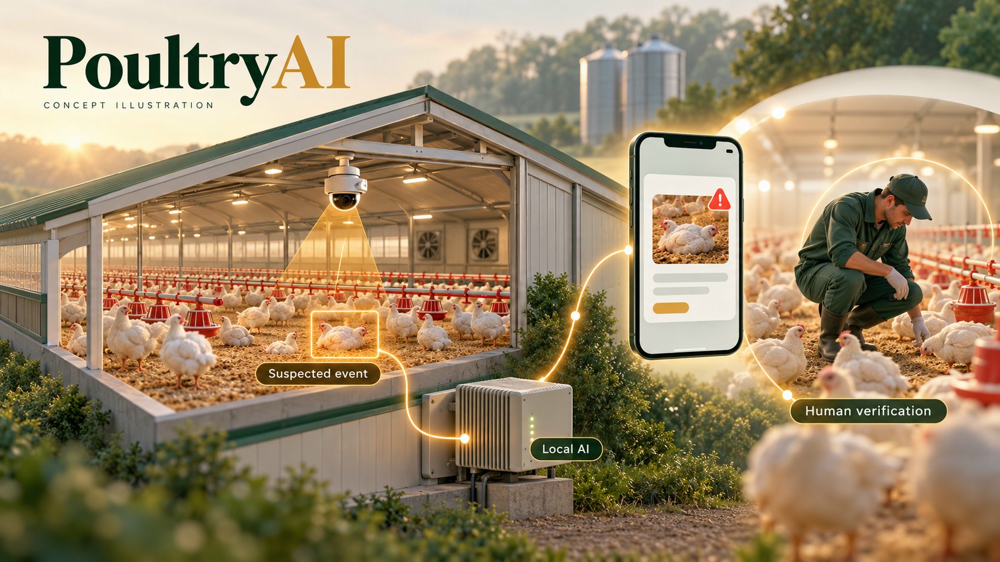

الأساس البحثي
يعتمد المشروع على أبحاث جارية في الرؤية الحاسوبية والذكاء الاصطناعي على الأجهزة الطرفية. تفاصيل البحث التقنية غير معروضة أثناء إجراءات النشر.
من البحث العلمي إلى فهم ما يحدث داخل العنبر.
رؤية حاسوبية وذكاء اصطناعي محلي لرصد الطيور المشتبه في نفوقها وتوجيه العامل لفحصها. التحقق داخل مزرعة تجارية هو الخطوة التالية.
يعتمد المشروع على أبحاث جارية في الرؤية الحاسوبية والذكاء الاصطناعي على الأجهزة الطرفية. تفاصيل البحث التقنية غير معروضة أثناء إجراءات النشر.
تطوير المسار من الكاميرا إلى التنبيه، وإضافة مراجعة العامل وسجل الأحداث، والتحقق من وصول التنبيهات. لم يُقَس زمن وصول التنبيه من البداية للنهاية بشكل مستقل.
التقييم المتاح تم في ظروف محكومة أو تقريبية، وليس داخل عنبر تجاري عامل بالكامل. الاعتمادية طويلة الأجل والإنذارات الخاطئة والعائد الاقتصادي تحتاج تحققًا ميدانيًا.
هذه الحالة لا تعني جاهزية المنتج للتشغيل التجاري أو اكتمال تجربة ميدانية.
الملاحظة المستمرة لآلاف الطيور بواسطة العاملين غير عملية.
قد لا تُلاحظ حالات النفوق أو الخمول غير المعتاد حتى جولة التفتيش التالية.
تأخر الاستجابة قد يسهم في خسائر ومخاوف تتعلق بالأمن الحيوي ورفاه الحيوان.
يلتقط النظام المقترح الفيديو، ويحلله محليًا، ويرسل تنبيهات بالحالات المشتبه فيها لمراجعة العامل. تكامل لوحة المتابعة وموثوقية التنبيهات يحتاجان إلى التحقق.

رصد الطيور المشتبه في نفوقها، وتنبيهات يراجعها العامل، وتسجيل الأحداث وقياس زمن وصول التنبيه، ثم اختبار داخل عنبر تجاري.
الخمول غير المعتاد، ومراقبة السلوك، ومؤشرات الرفاه، والتحليلات ودعم القرار.
يرصد كاشف من فئة واحدة أنماطًا بصرية متوافقة مع الطيور النافقة. لا يتنبأ بالنفوق المستقبلي ولا يشخّص الأمراض.
قد تتسبب الطيور المستريحة أو النائمة في تنبيهات خاطئة. وقد تؤدي الإضاءة الضعيفة أو المسافة أو حجب الرؤية إلى حالات فائتة. التمييز الموثوق بين الراحة والنفوق لم يُحسم بعد.
يفحص العامل كل حالة مشتبه فيها ويتأكد من حالة الطائر قبل التصرف. استخدام المعلومات الزمنية وفئات مستقلة للطيور الحية والمستريحة من التحسينات البحثية المخططة.
قياسات التجربة المخططة: استرجاع الحالات المؤكدة، والتنبيهات الخاطئة لكل عنبر يوميًا، وزمن الإخطار والفحص، واستمرارية التشغيل، ورأي العاملين. تُتفق معايير القبول مع المزرعة قبل التجربة.
تستهدف دعم التفتيش البشري الدوري. التشغيل المستمر في ظروف المزرعة ما زال يحتاج اختبارًا.
تحليل الفيديو على الأجهزة داخل الموقع يدعم سرعة الاستجابة وإمكانية التطبيق.
ينتج النموذج أحداث رصد، وسيختبر المنتج الأولي مدى مساهمة التنبيهات في تسريع تدخل العامل.
*مرجع تاريخي فقط، وليس العدد الحالي للعنابر. سيُحدّث تقدير السوق ببيانات المنشآت الحديثة والتحقق مع العملاء.
مزارع الدواجن التجارية والمنتجون المتكاملون في السعودية ← توسع محلي ← دول الخليج.
رسوم أجهزة وتركيب لمرة واحدة، واشتراك برمجي دوري لكل عنبر. الفرضية الأولية للتحقق: 400 ريال شهريًا لكل عنبر.
مزارع الدواجن التجارية والمنتجون والشركات المتكاملة.
اكتشاف أسرع، وتنبيهات عملية، وتقليل عبء المتابعة اليدوية.
مبيعات مباشرة للشركات وتجارب ميدانية وشركاء القطاع.
تركيب وتهيئة ودعم وخدمة برمجية باشتراك.
أجهزة وتركيب، مع اشتراك دوري لكل عنبر.
تطوير الذكاء الاصطناعي والتكامل والتركيب والدعم.
نماذج الرؤية الحاسوبية والمعالجة المحلية والكاميرات ولوحة المتابعة والفريق التقني.
المزارع والمنتجون المتكاملون وموردو الأجهزة والشركاء البحثيون.
الأجهزة والتركيب والخدمات السحابية وتطوير النماذج والصيانة.
«القيمة التي نقدمها هي اكتشاف أسرع ومعلومات تساعد المزرعة على اتخاذ الإجراء.»
تأسيس خط الأساس التقني؛ والتحقق المستقل داخل المزارع خطوة لاحقة.
الخطوة التالية: دمج مسار الرصد والتنبيه الموجّه للعامل والتحقق منه.
قياس الدقة والإنذارات الخاطئة وزمن الاستجابة والاعتمادية والقيمة الاقتصادية.
تحسين الأجهزة والبرمجيات والتحقق من القيمة المقدمة للعميل.
الوصول إلى أول عملاء يدفعون مقابل الخدمة في السعودية.
إضافة تحليل السلوك والرفاه، والتوسع في أسواق الخليج.
قائد البحث
أستاذ مساعد بالكلية التطبيقية، جامعة الأمير سطام بن عبدالعزيز. خبرة في الرؤية الحاسوبية وتعلّم الآلة وهندسة البرمجيات وأنظمة إنترنت الأشياء.
قاد الفريق الصناعي في مشروع Smart Spout الممول ضمن برنامج ITIDA–ITAC، بالتعاون بين جامعة المنوفية وشركة EA للحلول البرمجية، وأسهم في تسليم منتج أولي يجمع وحدة أجهزة وتطبيق هاتف وقاعدة بيانات ولوحة متابعة على الويب.
الملف البحثي على ORCIDالانتماءات البحثية لا تعني تأييدًا مؤسسيًا أو شراكة تجارية رسمية أو تأكيد وجود مزرعة مستضيفة. خبرة Smart Spout مستقلة عن التحقق الميداني لمنصة PoultryAI.
نستهدف إرشادًا في التحول التجاري، والوصول إلى مزارع دواجن سعودية، ودعم فهم احتياجات العملاء، والتوجيه في الملكية الفكرية واتفاقيات البيانات وموارد التجربة. هذه خطة مقترحة ولا تعني قبولًا في ARC أو التزامًا بالتمويل.
مقابلة المشغلين، والاتفاق على سير التجربة وصلاحيات استخدام البيانات، وتوثيق إجراءات التفتيش الحالية ومعايير القبول.
تجهيز الكاميرا ووحدة المعالجة وواجهة مراجعة العامل وسجل الأحداث واختبارات وصول التنبيهات، وتحديد متطلبات التركيب والصيانة.
حسب إتاحة المزرعة وتوقيت دورة الإنتاج، تُنفّذ التجربة وتُراجع جودة الرصد والتنبيهات الخاطئة واستمرارية التشغيل وزمن الاستجابة والتكلفة والاستعداد للدفع.
نقطة القرار: التقدم نحو التشغيل المدفوع عندما تدعم الأدلة الميدانية وآراء العملاء ذلك. يبدأ الجدول بعد الاتفاق على الدعم وإتاحة المزرعة.
أرقام إنتاج الدواجن: الهيئة العامة للإحصاء (GASTAT)، إحصاءات الثروة الحيوانية أو البيان الإخباري لعام 2024. المرجع التاريخي لعدد العنابر: مسح المشروعات الزراعية المتخصصة لمزارع دجاج اللاحم لعام 2017، المنشور في 2017/2018.
التسعير فرضية للتحقق مع العملاء، وليس سعرًا سوقيًا مثبتًا.